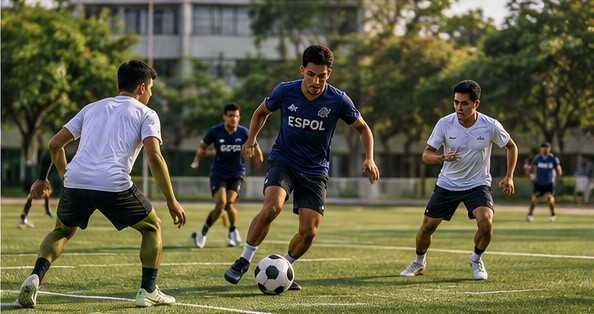
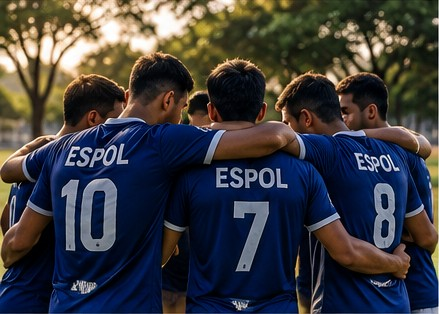
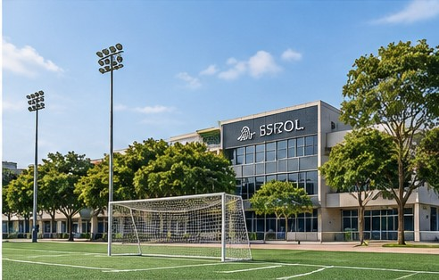

Fútbol recreativo
Modalidad: Recreativo
Nivel: Todos los niveles
Horario: 16:00
Cancha: Por confirmar
El fútbol de ESPOL en un solo lugar
Revive uno de los encuentros de la selección de fútbol de ESPOL. El equipo politécnico consiguió una victoria por 1-0 frente a la Universidad Laica Vicente Rocafuerte en el Campeonato Nacional de Fútbol Interuniversitario de 2022.
Fuente: El Canal del Fútbol (2022). Campeonato Nacional de Fútbol Interuniversitario.
Consulta los próximos encuentros deportivos de la comunidad ESPOL y conoce sus horarios, equipos participantes y canchas.
Los siguientes partidos son ejemplos para demostrar el diseño de PoliMatch.
Hora: 16:00
Equipos: Equipo A vs Equipo B
Cancha: Por confirmar
Hora: 15:00
Equipos: Equipo C vs Equipo D
Cancha: Por confirmar
Hora: 17:00
Equipos: Equipo E vs Equipo F
Cancha: Por confirmar
¿Quieres jugar fútbol en ESPOL? Explora los encuentros disponibles y conoce sus horarios, modalidades y condiciones de participación.
Los encuentros mostrados son ejemplos y no representan convocatorias oficiales.
Modalidad: Recreativo
Nivel: Todos los niveles
Horario: 16:00
Cancha: Por confirmar
Modalidad: Amistoso
Nivel: Intermedio
Horario: 15:00
Cancha: Por confirmar
Modalidad: Universitario
Nivel: Todos los niveles
Horario: 17:00
Cancha: Por confirmar
Consulta las fechas, horarios y condiciones de las pruebas de selección de las asociaciones deportivas de ESPOL.
PoliMatch no registra estudiantes ni confirma cupos, y este formulario no envía información.
Conoce dónde se encuentran las canchas de fútbol de ESPOL y cómo solicitar su uso.
PoliMatch no gestiona reservas: solo te orienta sobre el trámite con Bienestar Politécnico.
Importante: el proceso y los requisitos los define Bienestar Politécnico; confirma siempre con ellos.
Conoce las asociaciones estudiantiles que organizan partidos y pruebas de selección de fútbol en ESPOL.
Actividades: entrenamientos y partidos amistosos.
Próximo partido:
Actividades: pruebas de selección y torneos internos.
Próximo partido:
Actividades: partidos recreativos abiertos a estudiantes.
Próximo partido: por confirmar
Aquí encontrarás las condiciones generales para participar en los encuentros de fútbol de ESPOL.
Los datos mostrados deben ser confirmados por los organizadores de cada encuentro.
La duración de los partidos y la rotación de jugadores pueden variar según el encuentro. Consulta este dato con los organizadores antes de asistir.
Algunos encuentros podrían solicitar una contribución para el arbitraje. Esto solo aplica si los organizadores lo confirman, PoliMatch no establece ni cobra ningún valor.
En PoliMatch queremos conectar a los estudiantes de ESPOL a través del fútbol, promoviendo el compañerismo, la participación y la diversión.



Fuente: ilustraciones generadas mediante inteligencia artificial para el proyecto PoliMatch. Son representaciones ficticias y no fotografías de eventos o instalaciones reales de ESPOL.